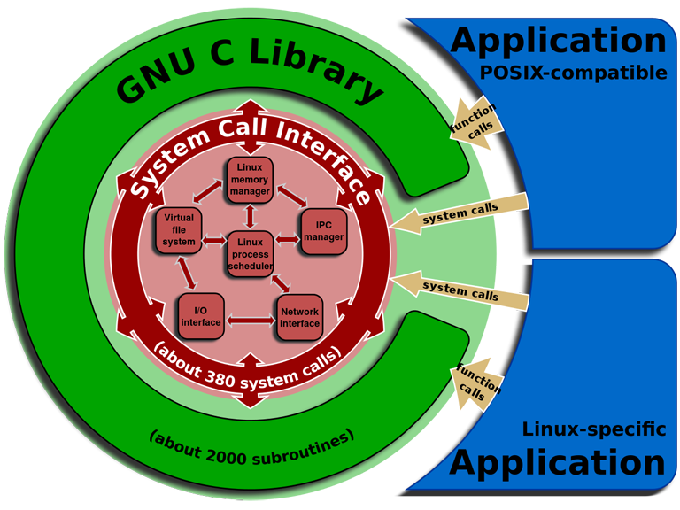
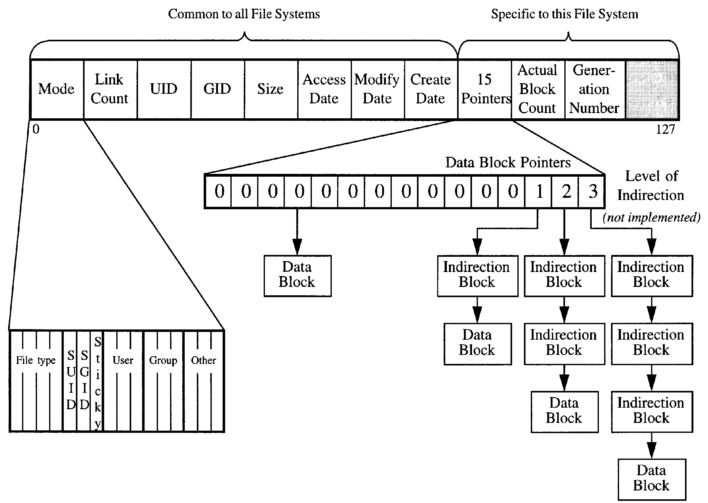
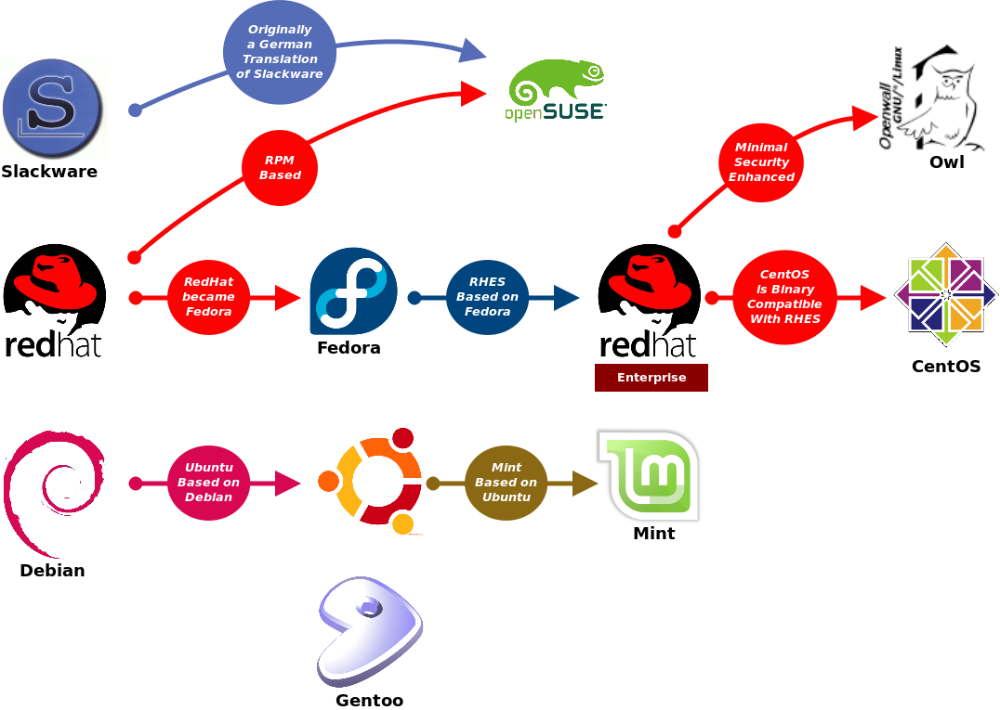

Linux
1 内核
1.1 运行级别
| 用户态 | 执行一般任务，如数学计算 |
|---|---|
| 内核态 | 对硬件外设进行操作，如读取磁盘文件、发送网络数据 |
1.1.1 优势
- 安全性：进程必须通过内核提供的系统调用来操作硬件，所以不用担心应用程序对硬件进行非法操作。
- 简化开发模型：由于将底层的实现都封装在系统调用中，简化了用户态应用开发的难度。
1.1.2 切换
进程切换到内核态通常有两种方式：
- 直接使用内核提供的系统调用（system call）。
- 使用 C 库函数（
libc）封装的系统调用，即 C API。

2 进程
2.1 信号
| 值 | 信号 | 动作 | 按键 | 描述 |
|---|---|---|---|---|
| 1 | SIGHUP |
挂起（hang up） | ||
| 2 | SIGINT |
终止（interrupt） | Ctrl+C |
|
| 3 | SIGQUIT |
停止 | Ctrl+\ |
进行 core dump |
| 9 | SIGKILL |
无条件终止 | 无法捕获、忽略 | |
| 15 | SIGTERM |
终止 | 可以捕获、忽略 | |
| 17 | SIGSTOP |
无条件停止 | 不终止 | |
| 18 | SIGTSTP |
暂停（temporary stop） | Ctrl+Z |
不终止（程序保留在内存，可以从停止的位置继续） |
| 19 | SIGCONT |
继续 |
2.2 权限
- 进程是作为特定用户和组运行的，核心进程通常作为
root运行。 - 为了安全性，子进程会进行「降级」，比如 Apache 主进程作为
root运行，而子进程作为其他用户运行。
2.3 调度优先级
- 系统内核将 CPU 时间轮流分配给每个进程，调度优先级决定分配给进程的时间总量。
- 数值为从 -20（最高） 到 +20（最低） 的整数。默认所有进程都以相同的优先级 0 启动。
2.4 系统调用
| fork | |
|---|---|
| exec | 通知内核执行一个程序，这个程序将会替代正在被调用的程序。 |
| 新程序执行完成后，难以返回之前的程序。 |
3 文件系统
3.1 Glob
Shell 通过简单模式匹配文件和目录名的方式称为 globbing，Shell 将包含 glob 的参数替换为匹配的文件和目录名，这个过程称为扩展（expansion）。Shell 进行扩展是在运行具体命令之前，即 Shell 将扩展的结果作为参数传递给命令。
$ echo .bash* .bash_history .bash_logout .bashrc
$ echo .bash'*'
.bash*
$ echo notfound* notfound*
$ echo .* . .. .file
$ echo .[^.]* .file $ echo .??* .file
3.2 Inode

3.3 常用
/
bin/ # GNU 用户级工具
boot/ # 启动文件
dev/ # 设备节点
etc/ # 系统配置文件
group
hosts
inittab # 系统运行级
password
profile
shadow # 密码
home/ # 用户目录
lib/ # 系统和应用程序的库文件
media/ # 可移动媒体设备挂载点
mnt/ # 可移动媒体设备挂载点
opt/ # 可选软件包
proc/
loadavg # 系统负载和进程队列数据
meminfo # 内存使用数据
root/ # 根主目录
sbin/ # GNU 管理员级工具
tmp/ # 临时文件
usr/ # 用户安装程序
bin/ # 系统程序
etc/ # 附加程序
local/bin/ # 自定义命令和脚本
share/
dict/words # 字典文件
var/ # 可变文件，如日志
4 流
4.1 输入
Ctrl+D 表示文件结束符。
5 用户、组
- 用户属于一个 primary 组，多个 secondary 组。
- 新建的用户默认属于与其同名的组。
- 新建的文件、目录默认属于创建者和创建者所属的组。
5.1 /etc/passwd
存储已创建的用户的信息。
<user>:<password>:<uid>:<gid>:<info>:<home_dir>:<shell>
<password> # x 表示加密密码
# 示例
root:x:0:0:root:/root:/bin/bash
ubuntu:x:1001:1001:Ubuntu:/home/ubuntu:/bin/bash
6 权限
| 文件 | 目录 | |
|---|---|---|
r |
读文件 | 读目录内容 |
w |
写、删除文件 | 新建、重命名文件 |
| 新建、重命名、删除子目录 | ||
x |
执行文件 | 进入（ cd ）目录 |
- 执行脚本语言文件必须同时有
r权限。
6.1 Umask
| Read | Write | Execute | |
|---|---|---|---|
0 |
✓ | ✓ | ✓ |
1 |
✓ | ✓ | |
2 |
✓ | ✓ | |
3 |
✓ | ||
4 |
✓ | ✓ | |
5 |
✓ | ||
6 |
✓ | ||
7 |
$ umask 0002 $ touch tmp -rw-rw-r-- ... $ mkdir tmp drwxrwxr-x ...
6.2 Sticky Bit
目录设置 sticky bit 后，目录下新建的文件和目录会继承此目录的所属组。
$ mkdir foo drwxrwxr-x ... root root ... foo/ $ chgrp foo foo drwxrwxr-x ... root foo ... foo/ $ chmod g+s foo # 设置 sticky bit drwxrwsr-x ... root foo ... foo/ # 组权限变为 rws $ cd foo $ touch bar -rw-rw-r-- ... root foo ... bar # 继承所属组 foo
7 启动
7.1 运行级
| 0 | 关机 |
|---|---|
| 1 | 单用户模式 |
| 2 | 多用户模式（无网络） |
| 3 | 多用户模式（全功能） |
| 4 | 可定义用户 |
| 5 | 多用户模式（网络，图形化 X Window） |
| 6 | 重启 |
不同的运行级启动不同的程序和脚本。
/etc/inittab 中列出系统的运行级，开机过程中会被读取。
7.2 开机运行
/etc/rc<n>.d # n 为运行级，rc = run commands /etc/init.d /etc/init.d/rc.d
/etc/init.d/rc.local /etc/init.d/boot.local /etc/rc.d/rc.local /etc/rc.local
7.3 Shell 登录运行
~/.bash_profile |
登录时（交互式 login 方式）运行一次 |
|---|---|
~/.bashrc |
登录时及每次打开新 shell 时（交互式 non-login 方式）运行 |
~/.bash_logout |
shell 退出时运行 |
8 Shell
8.1 命令
| 示例 | ||
|---|---|---|
| 内部命令 | 不需要单独的进程来运行 | cd |
| 外部命令 | 需要创建（fork）和执行一个子进程 | /bin/ls |
对应 /bin 或 /usr/bin 下的程序 |
8.2 变量
| Shell 变量 | 专属于 Shell 的临时变量，不能被 Shell 运行的命令使用。 |
|---|---|
| 环境变量 | 操作系统将 Shell 环境变量传递给 Shell 运行的命令。 |
8.2.1 Shell 变量
$ <NAME>=<value> $ echo $<NAME>
8.2.2 环境变量
$ <NAME>=<value> $ export <NAME>
8.2.3 环境变量列表
HOME |
Home 目录 |
|---|---|
PATH |
命令搜索路径 |
8.3 快捷键
Ctrl A |
移动到行首 |
|---|---|
Ctrl E |
移动到行尾 |
Ctrl W |
剪切前一个词 |
Ctrl U |
剪切行首到光标位置 |
Ctrl K |
剪切光标位置到行尾 |
Ctrl Y |
粘贴 |
9 环境
9.1 用户配置
~/.bashrc |
登录时自动运行，用于设定自定义环境变量等 |
|---|---|
~/.profile |
|
~/.bash_profile |
9.1.1 .bashrc
if [ "x${SSH_TTY}" != "x" ]; then chage -l <account> | grep "Account expires" | tr -d "\t" fi
10 发行版
